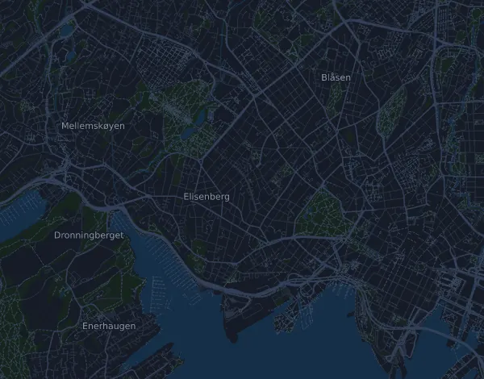

DNB Oslo Maraton – Halvmaraton 21 km
- Distance
- 21,1 km
- Højdemeter
- ↑ 135 m
- Højeste punkt
- 59 m o.h.
- Underlag
- Vej
- Karakter
- Let kuperet
- Start
- kl. 13:00
Højdeprofil
Forbered dig med Mila
Mila er en løbecoach i en app. Lægger du et løb ind i din plan, planlægger coachen ugerne frem til start efter din form og giver dig en tidsprognose og en plan for tempo, væske og energi på ruten.

Den rette træning. Den rette dag.
Ruten

Om ruten
DNB Oslo Maraton – Halvmaraton er et vejløb på 21,1 km i Oslo, Norge. Ruten har 135 højdemeter stigning og 134 højdemeter fald, 6,4 m pr. km, og regnes dermed som let kuperet. Det højeste punkt ligger 59 m o.h. og det laveste 2 m o.h.
Den største stigning begynder ved km 1,9: 47 højdemeter på 3,3 km med 1,4 % i snit, op til 59 m o.h. I alt har ruten 2 stigninger på mindst 25 højdemeter; den sidste begynder ved km 8,3.
I Mila-appen beskriver coachen ruten i detaljer på dit sprog og planlægger dit tempo og din energi til den.
Stigninger
| Begynder ved | Længde | Højdemeter | Hældning | Top (m o.h.) |
|---|---|---|---|---|
| km 1,9 | 3,3 km | 47 m | 1,4 % | 59 |
| km 8,3 | 9,2 km | 35 m | 0,4 % | 44 |
Før start
Starttider
- kl. 13:00
Kilde: oslomaraton.no, hentet 24. november 2026
Tempotabel
DNB Oslo Maraton – Halvmaraton 21 km på 1:30:00 – tid pr. km og mellemtider
4:16 pr. km · km 5: 21:20 · km 10: 42:39 · km 15: 1:03:59 · mål: 1:30:00
DNB Oslo Maraton – Halvmaraton 21 km på 1:45:00 – tid pr. km og mellemtider
4:59 pr. km · km 5: 24:53 · km 10: 49:46 · km 15: 1:14:39 · mål: 1:45:00
DNB Oslo Maraton – Halvmaraton 21 km på 2:00:00 – tid pr. km og mellemtider
5:41 pr. km · km 5: 28:26 · km 10: 56:52 · km 15: 1:25:18 · mål: 2:00:00
DNB Oslo Maraton – Halvmaraton 21 km på 2:15:00 – tid pr. km og mellemtider
6:24 pr. km · km 5: 31:59 · km 10: 1:03:59 · km 15: 1:35:58 · mål: 2:15:00
Tiderne forudsætter et jævnt tempo hele vejen. Det er ren regning, ingen prognose: på stigninger, i trængsel og ved væskedepoter svinger tempoet.
Ofte stillede spørgsmål
Hvornår løbes DNB Oslo Maraton – Halvmaraton 21 km?
DNB Oslo Maraton – Halvmaraton 21 km løbes lørdag den 18. september 2027. Tjek dato og starttid hos arrangøren.
Hvornår starter DNB Oslo Maraton – Halvmaraton 21 km?
Ifølge arrangøren: kl. 13:00.
Hvor langt er DNB Oslo Maraton – Halvmaraton 21 km, og hvor mange højdemeter er der?
Løbet er 21,1 km langt med 135 højdemeter stigning og 134 højdemeter fald. Det højeste punkt ligger 59 m o.h.
Hvordan er ruten på DNB Oslo Maraton – Halvmaraton 21 km?
Ruten regnes som let kuperet, med 6,4 højdemeter pr. km i snit. Den har 2 stigninger på mindst 25 højdemeter; den største begynder ved km 1,9: 47 højdemeter på 3,3 km. Start og mål ligger samme sted. Underlaget er vej.
Hvordan fordeler jeg farten på DNB Oslo Maraton – Halvmaraton 21 km?
Gå efter en jævn indsats frem for et jævnt tempo: lad farten falde på stigningerne, hent den igen, når det flader ud, og hold igen de første kilometer. De største stigninger begynder ved km 1,9 og km 8,3. I Mila får du en tempoplan til netop denne rute efter din egen form.
Flere løb som dette
Flere løb i nærheden
- DNB Oslo Maraton – Maraton 42,7 km18. september 2027 · Oslo, Norge
- Romsdalseggenløpet – Fjord to Summit (28 km)4. september 2027 · Åndalsnes, Norge
- Hytteplanmila 10 km16. oktober 2027 · Røyse, Hole (Svendsrudmoen), Norge
- Midnight Sun Marathon 42,2 km19. juni 2027 · Tromsø, Norge
- Midnight Sun Marathon – Mizuno Half Marathon 21 km19. juni 2027 · Tromsø, Norge
- Birkebeinerløpet 21 km12. juni 2027 · Lillehammer (Birkebeineren skistadion), Norge
Forbered dig med Mila
Den rette træning. Den rette dag.
Oplysningerne kommer fra rutefilen og arrangørens information. Tjek dato, starttider og regler hos arrangøren.
Mila er ikke tilknyttet, sponsoreret af eller godkendt af arrangøren eller løbets sponsorer. Navne og varemærker tilhører deres ejere. Arrangør eller rettighedshaver? Bed om ændring eller fjernelse